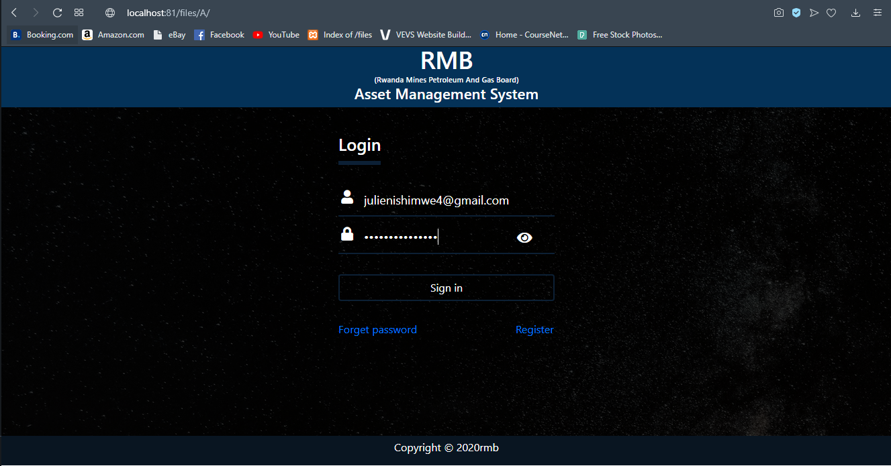
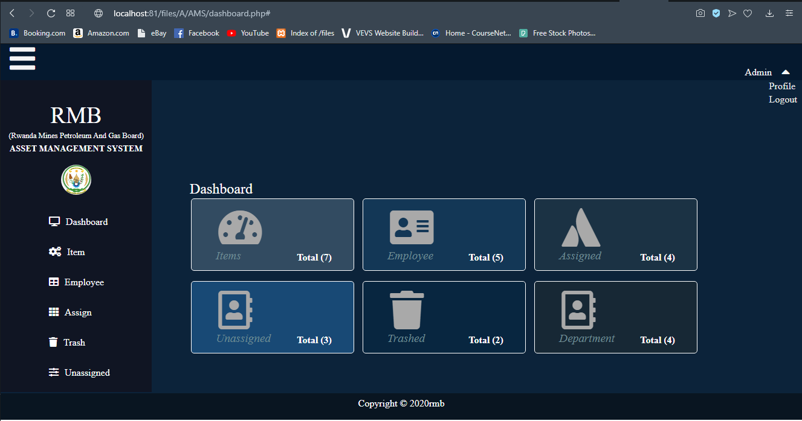
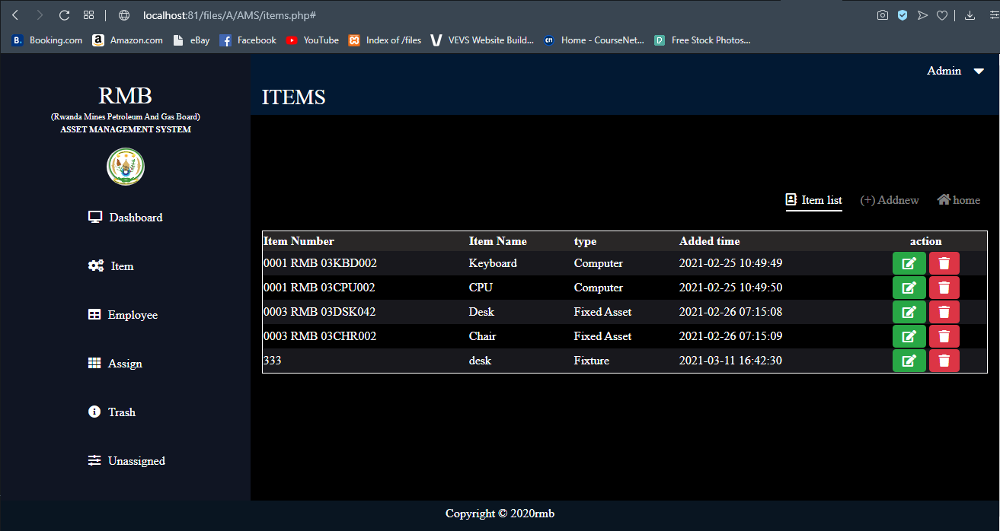
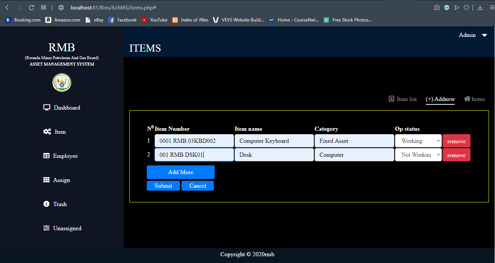
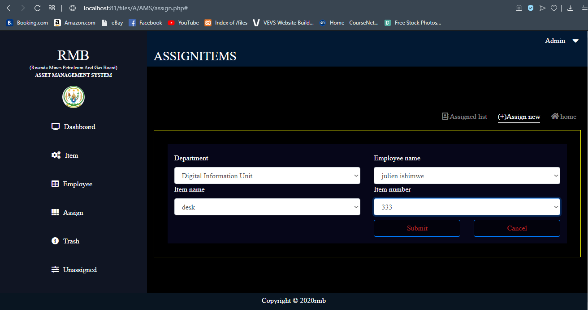
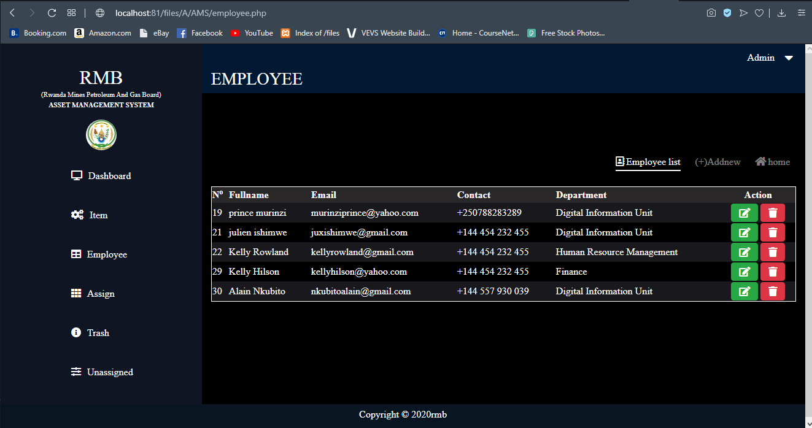

WHAT IS AMS?
What is an asset management system? In short, it’s any process a company or organization uses to keep track of the equipment and inventory
vital to day-to-day operation of their businesses. Exactly how those assets are managed, though, is highly variable. In large part,
it depends on whether the organization in question is aware of the assets they own,

and whether they’re aware of the potential ramifications of an inefficient tracking system.
An accurate, real-time asset tracking system is more important than a lot of companies realize.
Unfortunately, companies who don’t have a handle on their asset management typically lose considerable amounts of money and time
before they begin to seek a better solution. Thanks to the cloud and mobile technology, there is indeed a better way to track your assets.
Asset Panda offers our clients a platform that’s extremely intuitive and easy to use. We’ve invested hundreds of hours to research and
develop a robust set of features that empower clients to manage their assets exactly how they want – and at a fraction of the cost of our competitors
WHY AMS?
Asset management allows the organization to keep track of all their assets. It can tell where the assets are located, how they are used,
and when changes were made to them. The data from the asset management solution can ensure that asset recovery will lead to better returns.

Manage assets from different locations in an accurate and effective manner. The company can easily create an inventory report that might be required by some insurers or lease financiers.
Asset management can also be used to make sure that the amortization rates are accurate. Regular assessments of the assets will ensure that the financial statements of the business are accurate.
Asset recovery is automatically reflected in an asset management system. Once assets are scrapped or sold, the said assets will be removed from the records and books of the business. Related assets,
such as consumables and spare parts, are written off or sold to free storage space.
HOW THE SYSTEM WORK?

Asset management software is a centralized system that allows your organization to track important details about each asset in real time. This decreases administrative costs,
improves service and gives your organization greater visibility into asset utilization, costs and maintenance.

After that user can enter to the pages contains available car in system where s/he can choose the car to rent in many cars, automaticaly
after the admin confirmation of the car rent this car removed from available list to unvailable car list. customer got the receipt contain
the date of car must be returned so, when the car is returned to the company Admin can update the car information from unvailable car list to available
car inorder to be used in renting again and again.
HOW THE SYSTEM WORK? Part2

Asset management software is a centralized system that allows your organization to track important details about each asset in real time. This decreases administrative costs,
improves service and gives your organization greater visibility into asset utilization, costs and maintenance.
Asset management software is a dedicated application which is used to record and track an asset throughout its life cycle, from procurement to disposal. It provides an organization
Asset management software is a dedicated application which is used to record and track an asset throughout its life cycle, from procurement to disposal. It provides an organization with information like where certain assets are located, who is using them, how they are being utilized and details about the asset.
CONCLUSION.
Asset management software makes you more aware of what assets you have and helps you avoid potential risks.
The system optimizes the life cycle of your assets from the time you procure them through usage, decommissioning, to its disposal.
Whenever you recognize your need for better asset tracking, you can put our plans in place to avoid any unexpected difficulty and give your organization an opportunity to excel..

Fixed Asset Management gives you space to reduce expenses through loss prevention and improved equipment maintenance. It reduces new and unnecessary purchases of assets and can calculate taxes more accurately and efficiently, based on its depreciation schedules.Fixed Asset Management gives you space to reduce expenses through loss prevention and improved equipment maintenance. It reduces new and unnecessary purchases of assets and can calculate taxes more accurately and efficiently, based on its depreciation schedules.